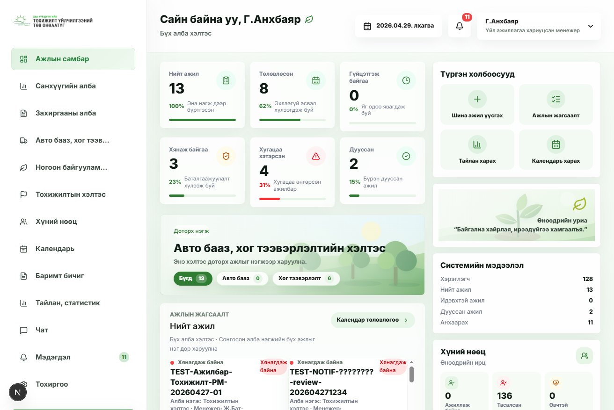
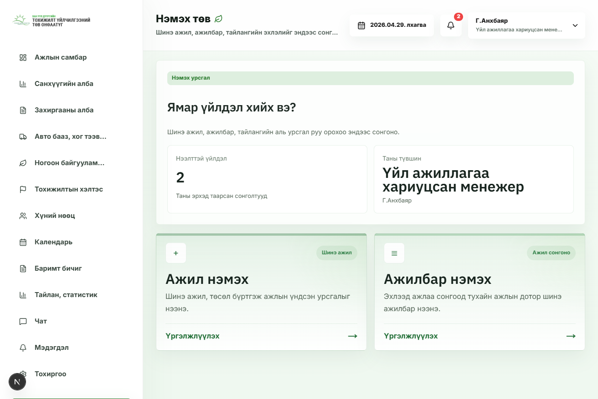
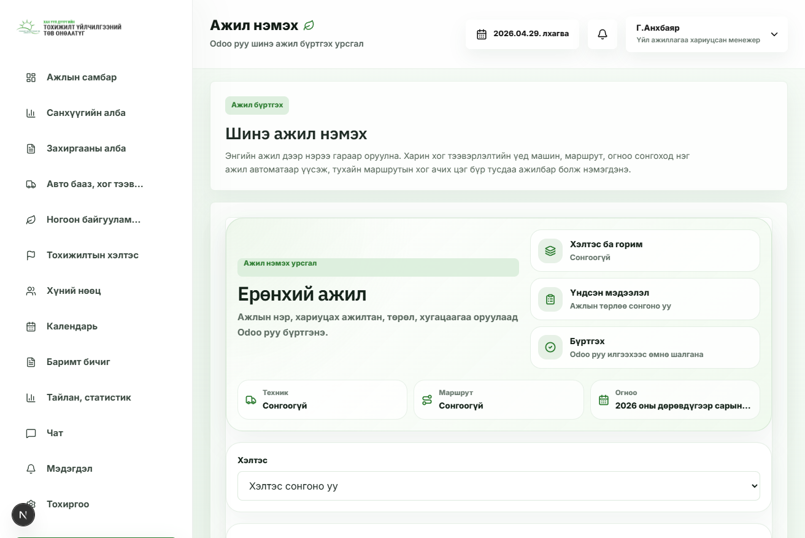
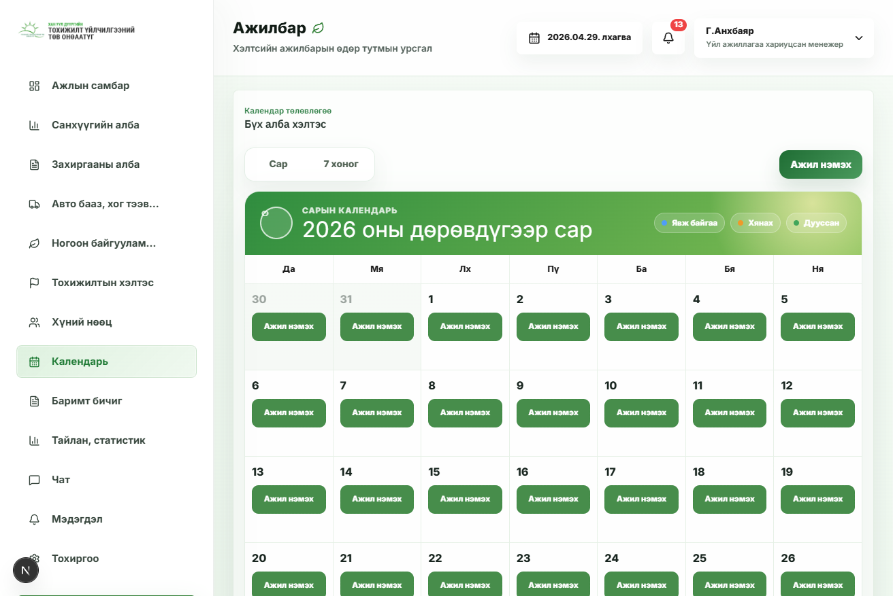
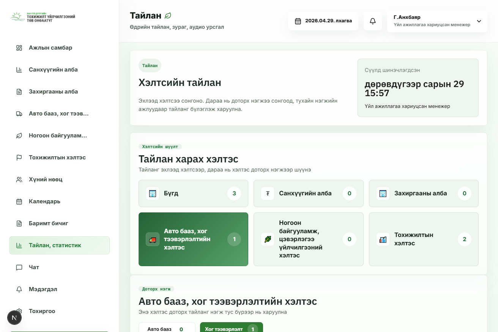
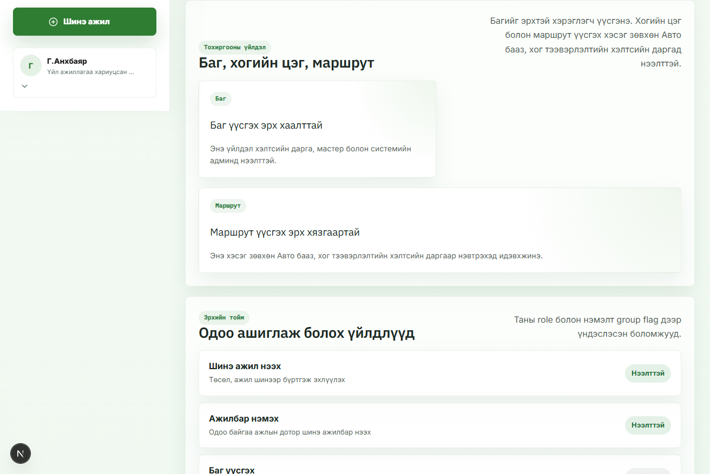

Ажил үүсгэхээс тайлан харах хүртэл
Доорх хэсэг нь web app-ийн бодит дэлгэцийн зурагтай, video шиг автоматаар солигдох walkthrough. Сургалт хийхдээ эхлээд энэ demo-г харуулаад, дараа нь role тус бүрийн заавраар явна.
Auto-play UI walkthrough7 дэлгэц







5. Мэдэгдэл
Өөрт ирсэн ажил, хяналт харах
1Header дээрх bell icon эсвэл sidebar “Мэдэгдэл” дээр дарна.
2Шинэ ажил, хянах ажил, хугацаа хэтэрсэн анхааруулга харагдана.
3Мэдэгдэл дээр дарж тухайн ажил/даалгавар руу орно.
Browser notification popup гарвал Allow дарна. Өмнө нь Block хийсэн бол Chrome Site settings дээр Allow болгож refresh хийнэ.
Бүх бодит дэлгэцийн зураг